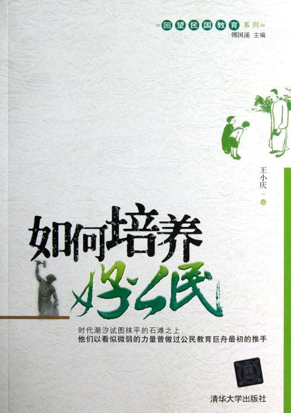
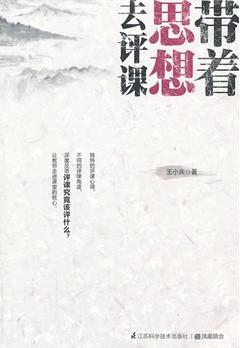

中国儿童阅读论坛是由亲近母语创办，在大陆和华语地区最有影响的儿童阅读论坛。每年都会有来自全国二十多个省市的一千多名校长和老师与会，被称为“点灯人的聚会”。
第八届论坛于2012年3月23-25日在杭州举行，主题为“儿童与哲学”。本次论坛的观摩课环节，郭老师上了一堂《申辩：从苏格拉底说起》。针对论坛活动及儿童哲学话题，新浪亲子对郭老师进行了专访。
主持人：本届论坛的“儿童与哲学”这个主题是怎么考虑的？
郭：这个主题，其实谋划和考虑了很久，之前也已经做过两次了，感觉这次更纯粹一点，也就是说关于哲学的阵容显得更强大一点。之前有这个创意，大家一边思考一边在做。在前面两次也讲到儿童哲学课的时候，我跟李庆明老师一起做这个课，后来回顾自己上的课，更多属于公民教育的内容。
我们上同课异构，这个同课异构比较有意思，是“关键词的同课异构”，不是上同一个文本，而是上同一个概念。儿童哲学课第一次合作，我和李庆明老师的概念是“自由”，他上了一节关于自由的课，我也上了一节关于自由的课；第二次儿童哲学课我们上的概念是“平等”，他上一节课，我也上一节；现在是第三次。
就哲学这个概念本身来说，所谓哲学就是爱智慧。既然你爱智慧，要去追求智慧，本身一定是有难度的，事实上，也正是有难度的学习，才是让人觉得很开心的。我觉得好的课堂一定是很快乐的，但是这个快乐不是表面的、肤浅的快乐——有的时候笑声也要有——但是更多是一种深层的，就像王小波所说的是一种思想的快乐。所以说一个非常精彩的课堂，当你沉浸在其中的时候，虽然你会觉得辛苦，中间会有一些停滞下来的时间，可能会有一些交锋，但是回过头去看，这课带给我们很多思考，而这样的思考本身有质量的。这种快乐肯定让在场每个人都能够卷到里面去，并且在回味的时候，觉得应该是有收获的。
说内心恐惧、画示意图、谈悬念设置……如何证明我在上一堂语文课？恐怕要让鲁迅先生来“证明”了。两篇经典文章、两个小影片、轰炸式的讨论、开放性的答案……打碎了记忆里昏昏沉沉的语文课。这堂课，我和初二的同学一起了解了“恐惧”。
【观点：鲁迅人格分裂】
“30秒的时间，回顾你人生中最恐怖的场面和事情。”
答案从蜘蛛开始，“可能有毒的、毛茸茸的动物。”大家表示赞同。昆虫也几乎成为每个人的记忆中都恐惧过的东西，有位男同学说：“我曾经梦到自己浑身爬满昆虫。”……还有人提到压力、英语老师、毫无防备下被惊吓、不被信任。最后，终于有人提到了尸体和死亡。这和肖贞老师准备的讲义联系到 了一起，她有自信同学们一定会谈到这种“恐惧”。
选文是鲁迅的《墓碣文》和卡夫卡《恐惧》，和以往逐段分析文字含义不同，肖老师几乎不讲解。在大家共同朗读完《墓碣文》后 ，肖老师要求大家在讲义上画示意图，把读到的理解到的意思画下来。一位男同学上了黑板，画得挺准确，意思基本到位。但这时下面 传来不同的声音：“尸体的头部不应该对着坟墓，应该反过来。”“不对，这个坟不符合风水学。”
通过画与改，相互补充、完整，全篇文字所表达的大致意思变得非常清晰。第二轮精读时，肖老师采取了另一种方式，让大家来谈 自己觉得最“恐怖”的小节，为什么恐怖，恐怖在哪里。每一个小节都有人提，视觉的恐怖、听觉的恐怖、前后文之间的对应，有理有据 。
【读报时间】
语文课的前十五分钟，照例是越读馆的必备项目：同学们自由读《南方周末》，并对此展开讨论。
一位女同学选择关注的报道是《最忙乱的孩子》，副标题是《林妙可在娱乐圈》，她主要负责为大家概括这篇报道，让没有看到的 同学能了解一二。肖老师很巧妙地将话题引致如何看待“成名”，她说：“张爱玲曾经说过，出名要趁早。可是林妙可却因为早出名付出 了很多代价。你们怎么看？”有位男同学分析了这两个人的年龄差距以及价值观的差异，尽管没那么逻辑缜密语言流畅，但一个普通成 年人可以达到的广度和深度，他居然都能达到。
第二篇题为《疑犯追踪与流言识别》的报道，肖老师引导大家学了两个新名词，递规式奖励结构和六度分离理论。“六度分离”，即 通过六个人就能认识世界上每一个人，那是60年前的研究结果，现在已进阶为四个人。这个知识点，对于我这个26岁的偏大龄女青年也 受用。
另外经过观察，同学们还关注的报道有《穿越“麦克马洪线”的中国人》、《乳粉标准没有“世界最严”》、《斗法法门寺》等，他们 基本具备在2分钟的速读后简单概括报道核心的能力。
【壹周提问】上海壹周×肖贞
Q：为什么选择“恐惧”的话题？
A：因为我自己就是个胆小的人，害怕很多东西，比如黑暗，还有照相机镜头对着我。每个人都会有很多“恐惧”的东西，我们通常采 取逃避的方式。我前段时间上了越读馆另一位老师的课，他给小学生讲葬礼，选择了一本书叫《殡葬人手记》，把死亡把殡葬细致地展 开，最后我和同学们一样，都觉得这不过就是一件寻常事啊。那天晚上我回家，第一次关灯睡觉。你可能觉得不可思议，可是我三十多 年真的都是习惯开灯睡觉的。原来克服“恐惧”是件简单的事情，所以我也想把这种经验分享给更多同学。
Q：在课堂上你很少给出对错的判断。
A：我们的课堂是开放式的，鼓励大家把思路打开。我们通常设置的问题也不是非此即彼的，所以我也没必要否定他们，每一种想法 都是好的。就像今天说鲁迅得了疟疾的同学，我觉得他的思路很好，他是想说生理的病痛让他有了切身的感受继而影响到精神，我觉得 这个思路很好。所以我告诉他，有没有得疟疾你要去求证。
Q：我发现很少有人走神，这在普通的课堂上不多见。
A：首先课程的设置是满且丰富的，形式一多就容易吸引注意力。你应该注意到我们的课还是保持一定的紧张度的，有很多讨论提问 的环节，同学们很少有机会走神。
上海壹周刊悦读第十版杭州越读馆独立语文教师，曾任《读写月报·新教育》责任编辑、《中学语文报》副主编、台州市玉城中学语文教师。2008年和郭初阳、蔡朝阳、蒋瑞龙等人成立“小学语文教材中的母亲和母爱”专题研究小组，分析、批评小学教材中所传达出的偏颇的价值观。发表《我们走》《成为人》《不再做戏——关于死亡教育的答问》《生死之间——评杨聪<忆儿时·养蚕>一课》等若干文章。
童蓓蓓是一个挺有意思的教师。在学生时期，印象中，老师都是赋予了严厉与不可抵抗的代名词。而初见到童老师时，短发，戴着有框眼镜的她让我打消了这是一个传统教师的想法，在她身上流露出更多的是欢乐和自由，以及她所说的“二”。
向往自由的童蓓蓓是一个很抗拒条条框框的人，囿于教育体制9年之久的她最终选择离开校园，加入崇尚“经典阅读，创意写作”的越读馆，独立进行语文教育的探索与实践。
“与孩子一起读书，与孩子同在”，这是童蓓蓓一直以来的教学理念。“孩子们是不希望被教育的，他们说得最多的一句话就是：我们一起来玩儿吧！我很享受和孩子们一起玩，但期间的规则必须要自己来定。”根据多年的教学经验，她知道孩子们并不抗拒规则，“相反，没有规则孩子才会茫然，所有调查里孩子对老师最大的不满是老师的偏心，不公正”。
对于童蓓蓓来说，教育孩子最主要的是教会他们探索与发现。对此，她举了一 个“青蛙王子”的例子。曾经在讲这个故事的时候，她给孩子们的任务是看故事探索公主与王子的性格。而孩子们在文本细读中发现“公主很自私，她亲青蛙只是为了能捡到那个球”“王子也很自私，他帮公主捡球只是为了能变回王子”中，最终在情节推敲中，大家惊讶地发现，不是“爱拯救了王子”，而是“做真实的自己才能让人看到更好的自己”。而在当下传统的教育中，往往都是老师塞给孩子固定的答案：“青蛙王子”的故事是一个歌颂公主与王子纯洁爱情的童话故事。“教育不是一个人打开另一个人，而是竭尽自己的能力来呈现、分享尽可能正确的东西。”童蓓蓓觉得课堂是向外探索世界，向内探索心灵的，所以老师应该提供足够的空间给孩子，不必要把自己的想法强制灌输给孩子，从而禁锢了孩子们的思想。
父母永远是孩子的第一教师，童蓓蓓认为家庭氛围对孩子有重要影响，她在采访中感叹道：“我们的家长一直在教育方法上苦苦寻找出路，却从来没有真正去关注过教育的本质。如果我们对孩子的教育从一开始就是功利的、不快乐的，那我们的孩子又怎么会感到快乐？如果我们对孩子的爱是有条件的，那么我们又怎么能要求孩子们来全心地爱我们？以恐惧控制的关系，必然导致背叛。”对于那些总是认为孩子不喜欢阅读、写不好作文的家长，童蓓蓓建议最好的方式是家长和孩子们一起阅读经典，家长能够起到榜样的作用。
童蓓蓓很喜欢读经典，所以越读馆的语文课程，全部是自选教材。“有趣、有料、有种”是选择教材的三个标准。“一部好作品胜过读其他100本书籍，一本好书能给孩子带来很大的影响。”所以是否经典是她选择教材的一个准则。
阅读和写作密不可分，就拿童蓓蓓自己来说，“如果说阅读是呼吸，写作就是很重要的生活技能，就像战士必须有好武器一样”。她再三强调孩子们必须养成每天写作的习惯，即使仅仅每天记录生活中的碎片，也一样非常有用，“写作和生活就像酵母和面粉，酵母是想象、创意和技巧，面粉就是我们每天接触的现实生活。写作使生活变得丰盛而有弹性。每天写一些东西，可以保持我们心灵和外部世界的畅通”。
如果把一个苹果横向切开，会看到一个五角星的图案。据说，那是一个通往神秘王国的入口。对越读馆的姚萍老师来说，这个入口通往神奇的阅读与写作，她会如何带领她的孩子们走向这个神秘王国？我们听她聊一聊。
姚老师：苹果老师是教育小说《惊蛰·苹果老师》中的主人公，她富有灵性，在教学中全然地投入自我、帮助孩子们符合节律地成长。我的名字里也有一个萍，萍与苹同音，希望向着自己心目中的好老师努力成长。小朋友们都挺喜欢这个称呼，还有一个小朋友为我画了一张像，有一颗硕大的苹果头，并且认真地长了一片叶子。
姚老师：我现在教的是三四年级的孩子，不了解儿童的人会有一种刻板印象，觉得这个年龄段的孩子在上课时是坐不住的，因为缺乏自制力。事实上他们在课堂上也是能够安静下来的，如果能够满足他们被倾听与关注的渴望。
我班里有一个孩子，有时在上课时会说一些和课堂内容无关的话，有一次大家在安静阅读，他开始自言自语，我就走到他身边，蹲下来轻声问：“怎么啦？”他很轻很轻地跟我说了几句，是他生活里一些琐碎的片段，对于他来说显然这些是重要的，我点头道：“嗯，老师懂的，老师知道了。”他有点害羞的样子，微微低下了头，仿佛一只温顺的小兔子，乖乖地做该做的事了。所以我想，跟小孩子讲道理固然重要，在讲道理之前的倾听与接纳更加重要。教师这个职业意味着付出爱，也因此会收获更多的爱。
姚老师：卢安克说：“跟他沟通没用，跟他一起行动有用。”我在云南支教时，班上有一个女孩子，在学校里，无论是课堂表现还是与同学相处都非常好，可到了返校日有时就不愿意来学校。妈妈好言劝她、哄她，甚至罚她做农活，都收效甚微。我找她聊过几次，她也不愿意说出理由。后来我和同事去她家家访，不抱着什么目的，就是去了她家，和她一起走走山路、讲讲故事、也听她说说唱唱……后来她就不那么害怕学校了。
我跟现在的孩子相处也不抱什么目的性，听他们叽叽喳喳地围在你身边讲学校里、家里发生的有趣的事，课间跟他们一起翻花绳或是玩溜溜球，他们偶尔递给我一颗糖果或是一包咪咪虾条。谈不上震动，但深入我心，也是一种幸福。
姚老师：前不久的一堂创意写作课，主题是“数字诗”，小朋友们表现出来的创造力和想象力让我印象非常深刻。我记得有一位小朋友写了一首《33》：“一只耳朵没朋友/又来了一只耳朵/他俩互相拥抱/结果变成了蝴蝶的翅膀。”把无形的友情比喻成了有形的翅膀，很别出心裁，而且非常符合两个3的想象。这个孩子的妈妈后来还跟我分享，说孩子特意买了一本本子作为自己的“诗集”，放学一有时间就会去“写诗”。看到孩子们不仅在课堂上学得快乐享受，并且还能把这种状态延续到课后，这是让我感到最欣慰的。
顾老师教书已有六年，细致严谨，他的语文课堂深受学生欢迎。他不只是一个好教师，还擅长戏剧表演与戏剧指导；他热爱运动，曾骑行川藏线，单车环绕海南岛，尤其爱好跑酷。很多人不了解跑酷，我们特意采访了顾老师，请他聊聊这项运动。
顾老师：跑酷的英文表达是parkour，中文翻译得很有意思，兼顾音义 ，让人一听就联想到：跑起来很酷，很酷地跑着。 就我个人而言，更 喜欢它的本义——超越障碍。在这个意义上，它不是极限运动，而是每个人 都可以参与的。试问，谁不需要能超越障碍的身体和心灵呢? 我喜欢 练习空翻，为什么呢?因为身体腾空的时候，你能体验到那一瞬间超脱地 心引力的喜悦，人类自古以来就有对飞翔的渴望，苦于没有翅膀，在空翻 时享受奇妙的轻灵之感，真是生命中前所未有的快乐。 空翻是个高阶 动作，不可能常做。在日常训练中，我们要寻找适合自己的训练方式，探 索与周边环境的互动，进而不断超越自己。事实上，我练习跑酷的最终目 的，是为了更好地认识自己。
顾老师：首先，跑酷让我改变了对事情的理解。之前我的体质一般， 属于零基础入门，开始跑酷也晚。在跑酷中，我见识到有过人天赋的朋友 ，也深切体会过心有余而力不足的感觉，很多时候，不是自己不努力，而 是真的做不到，常有挫败感。但是，在练习中，我渐渐明白一点：坚持比 什么都重要。 其次，跑酷让我懂得了选择的重要。记得有一个转墙动 作，我跟着教练学，怎么都练不好，扭伤过手，也摔过好多次，到底是哪 里出了问题?后来才发现，是自己与教练的身体条件不同，有人习惯左脚 起步，有人习惯右脚起步，一味地跟着教练的脚步走，违反了自然训练法 的原则。所以，读懂自己，才能做出好的选择，符合自然之道。 第三 ，跑酷既锻炼体能，更澡雪精神。运动带来身体的轻盈，随着一次又一次 对恐惧的克服，那种从心中源源不断涌出的内在的快乐，是很难用语言来 表达的。
顾老师：这是一个好问题，两者有不少相通之处。跑酷的精要在 六个字：学需博，研需精。这六个字，也同样适用于语文学习。 举一 个“博”的例子。在跑酷时起先我不理解，想着自己笨拙如此，于是只苦练 一个前空翻的动作，却很快遇上瓶颈，怎么都跳不起来，不由心灰意冷。 索性去学个新动作——蹬台鱼跃，练着练着猛然发觉，原来“蹬台鱼跃”起跳 的垫步与弹跳，与前空翻是相通的!回过头去练前空翻，果然就突破瓶颈 了。触类旁通，这就是“博”的益处。 “精”则意味着一个动作必须熟练 到成为条件反射，方为成功。在垫子上滚翻只是纸上谈兵，失去动作的真 义。跑酷是与街道、建筑、栅栏……一切障碍物的交流，跑酷是运动者对世 界的穿越。 学需博，研需精。跑酷之精要，不正是胡适先生所强调的 读书的两个要素吗?他说：“理想中的学者，既能博大，又能精深。精深的 方面，是他的专门学问。博大的方面，是他的旁搜博览。博大要几乎无所 不知，精深要几乎惟他独尊，无人能及。”
顾老师：我爱语文，也爱跑酷。无论是跑酷还是语文学习，都仿佛一个金字塔，塔基要广大接地，塔尖要高耸入云。
Tang：我并不介意忙碌，不过这段时间太忙了些，停不下来。生活无非工作与休息两种状态，就像弗罗斯特《牧场》所写——我只是停下来把落叶耙开/也许还可以等着看泉水变清——专注才能完美，用心地耙好落叶之后，如果能有看泉水变清的时间，那就是理想的生活方式了，可惜眼前的落叶总耙不完。
Tang：最喜欢泡咖啡馆！这个冬天有很多天都在咖啡馆里度过。因为学生发现我常喝星巴克，Sanctus，一个心灵手巧的女生，还按照我的头像设计了一个星巴克LOGO，上面写着MENGBUCKS，非常有意思。
Tang：正在看小说《The Missing Rose》。前几天刚翻完约翰·洛克的《教育漫话》(Some thoughts concerning education)，涉及生活中的方方面面，有趣极了，强烈推荐给家长和老师们！
Tang：我随遇而听，呵呵。很爱Bob Dylan、Lenoard Cohen、Eric Clapton、周云蓬——那首《牛羊下山》，我听了大概有几百遍，更喜欢小河的版本。最近很受欢迎的Adele的歌也不错，她翻唱Bob Dylan的《Make You Feel My Love》，很好听。
单词nova，是突然放出光芒的一颗新星；教师Nova，是越读馆的一位英语老师， 拥有四套语言系统：乡谈为宁波话（当年效实中学的学霸），粤语好得足以让她完全 融入香港（三年港大HKU本科生涯），而重点在于，她的英语说得和普通话一样流利 地道。在香港大学就读时，Nova老师最好的朋友是Yolanda，两人因一个乡村教育项 目而结识，相见恨晚，就此开始了已近十年的友谊。Yolanda作为专业媒体人（现在 联合国开发计划署亚太总部工作），采访了Nova老师，以下的问答，带给我们许多关 于教育和生活的思考。
问：是什么原因，让你放弃在香港投行的高薪工作，来到杭州投身教育？
Nova：作出抉择之前，我思考了很久。国内的教育，因为自己从小就经历过，对 国内孩子的感受，我有同情的了解；港大三年让我获得了更广阔的视野，在理性的对 比中，思考大陆的教育问题。我越来越深地认识到，对于一个孩子的成长而言，中小 学阶段的教育实在太重要了——我回来投身教育，也许是听从内心的召唤吧。
问：现在的孩子比我们当年更忙碌，真正会学习、能发光的却很少，你觉得问题 到底出在哪里？
Nova：应试模式的僵化自不必说，问题出在一外一内：对“外”，优质教育资源（ 教师、教材、课程）的匮乏，导致孩子了解世界既无广度亦无深度；对“内”，因为缺 乏引导，缺乏真正的思考与行动，孩子无心亦无力来认识自己、省察人生。
问：除此之外呢？
Nova：除此之外，信心很重要。你要健康乐观地生活下去，你要有盼望未来的力 量，你要相信长大是一件美好的事，growing up is going to be awesome——我要把积极的信心传递给孩子们。
问：老师确实需要有激情和感染力。最近这段时间，你印象最深的是哪一节英语课？
Nova：越读馆的英语课，除了课本，还有老师自备的许多经典篇章、实效原版材 料，备课要求相当高。为了备《万圣节》这节课，我准备了至少三十个小时——查经考 典，搜罗各种传说趣闻，买来了南瓜自己动手做灯……课堂的探究性作业展示环节，一 个孩子提到Pomona的传说——Pomona，果树女神——我立刻给了回应，心里小小地欢呼了 一下。要知道，每个话题的核心词汇也许就百来个，而探究性学习中，孩子们触及的 单词会远超此范围。教师职业和历史学家一样，是持续不断的“挑战与应战”。
问：如果想有效率地背单词，你会推荐哪一本书？
Nova：推荐Merriam-Webster’s Vocabulary Builder，此书按照词根编排，解释准确，例句丰富，还有配套练习，非常好用。
问：你一直热爱旅行，到目前为止去了多少个国家，旅行中有没有触动你的人与事？
Nova：数一数的话，去过二十个国家了。泰国Khao Yai国家公园的向导Piak，让我很有触动。他对这里的一草一木了如指掌，植物的拉丁文名字简直倒背如流；还有识鸟的独门绝技，听听鸟叫就能判断是什么鸟。导游的间隙他都捧着书在读，一本是关于鸟类专业书籍，另一本是法语教材——他的法语也很流利了。年轻时Piak去中东，边打工边学英语；后来选择了国际游轮上的工作，可以游历世界；三十七岁回到故乡做向导，一做就是十三年，他讲述的时候很平静，一切都云淡风轻。于是，我暗问自己：等我五十岁时，回顾走过的路，是否可以了无遗憾；瞻望前程，是否可以继续选择这条人迹更少的——我自己决定的道路。
王小庆，中学英语高级教师，英语教科室主任。
在英语写作教学、诗歌教学方面精研多年，擅长课堂教学评估，文章多见于《教师月刊》、《中国教育报》、《教育研 究与评论》、《江苏教育研究》等报刊，编著的《好用的英语教学游戏》与《日有所诵·英文诵读》为广受好评的热销书，2013年出版课堂教学专著《带着思想去评课》。
王小庆:《好用的英语教学游戏》
王小庆编《如何培养好公民》
王小庆著：《带着思想去评课》